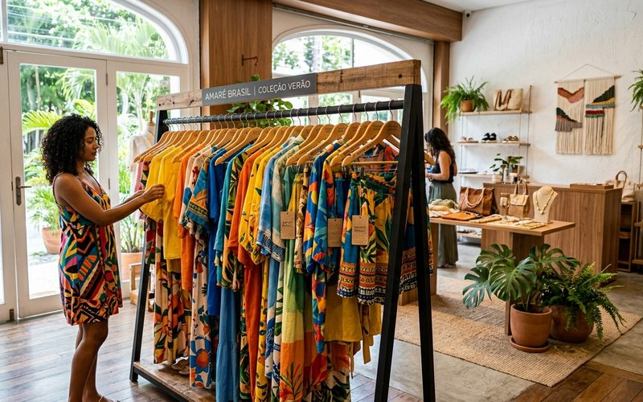

O Brasil tem uma produção têxtil rica e diversa que, por muito tempo, ficou à sombra das grifes internacionais. Mas quem frequenta brechós de curadoria sabe que encontrar uma peça de certas marcas nacionais é, muitas vezes, um achado mais precioso do que qualquer importado. Marcas que investiram em tecidos nobres, em modelagens bem estudadas e em identidade visual consistente envelhecem com uma graça particular, e em brechós como o Outra Vez, elas aparecem com frequência em estado excelente.
Conhecer essas marcas transforma o garimpo. Em vez de vagar sem direção entre araras repletas, você passa a ter um olhar treinado, capaz de identificar uma etiqueta valiosa à primeira passagem. É o tipo de conhecimento que separa o garimpo casual da curadoria pessoal.
A Farm construiu sua identidade sobre estampas exuberantes, referências tropicais e uma qualidade de tecido que resistiu às décadas. Vestidos, blusas e saias de coleções antigas da marca mantêm cor e forma com uma fidelidade impressionante, desde que conservados corretamente. No brechó, uma Farm de corte clássico pode custar um quinto do valor original e durar por muitos anos mais. O segredo está no reconhecimento das estampas exclusivas e na verificação do caimento, que nas peças mais antigas tende a ser mais generoso e fluido.
A Animale é sinônimo de alfaiataria feminina com personalidade. Blazers, calças estruturadas e vestidos de corte preciso da marca são peças que qualquer guarda-roupa cápsula agradece. A qualidade dos forros, a espessura dos tecidos e os acabamentos internos revelam um compromisso com a durabilidade que o fast-fashion simplesmente não replica. Encontrar uma Animale em brechó é um momento de celebração genuína.
Além das duas grandes, há um conjunto de marcas que os garimpadores experientes sabem reconhecer: a Osklen, com seus tecidos sustentáveis e cortes descomplicados; a Cris Barros, com sua minimalismo rigoroso e tecidos importados; a Iorane, com vestidos que transitam entre o casual e o sofisticado; e a Maria Filó, com suas linhagens e bordados delicados. No segmento mineiro, marcas como Dotz e Kika Simonsen também aparecem em brechós de curadoria com frequência.
Há ainda as marcas que deixaram de existir ou que mudaram muito de identidade ao longo dos anos, como a Richards feminina de certas épocas, ou a Ellus antes de determinadas mudanças de gestão. Peças dessas fases específicas têm um valor histórico e estético que vai além da etiqueta.
Mais do que a etiqueta em si, o que você está buscando é qualidade de execução. Verifique a costura interna: ela está bem acabada, com overlock limpo? O tecido tem corpo próprio ou é fino demais para se sustentar? Os botões são de osso, madrepérola ou metal, ou são de plástico barato? O caimento é equilibrado quando você segura a peça pelos ombros? Essas perguntas valem para qualquer marca e são o verdadeiro guia do garimpo consciente.
No Brechó Outra Vez, a curadoria já fez esse filtro por você. Cada peça que chega ao nosso espaço passou por uma avaliação criteriosa de estado, qualidade e potencial de uso. Mas conhecer as marcas que merecem atenção especial ainda faz diferença, porque é o tipo de peça que você vai usar por anos, e que um dia poderá consignar para que encontre uma nova dona com a mesma facilidade com que chegou até você.